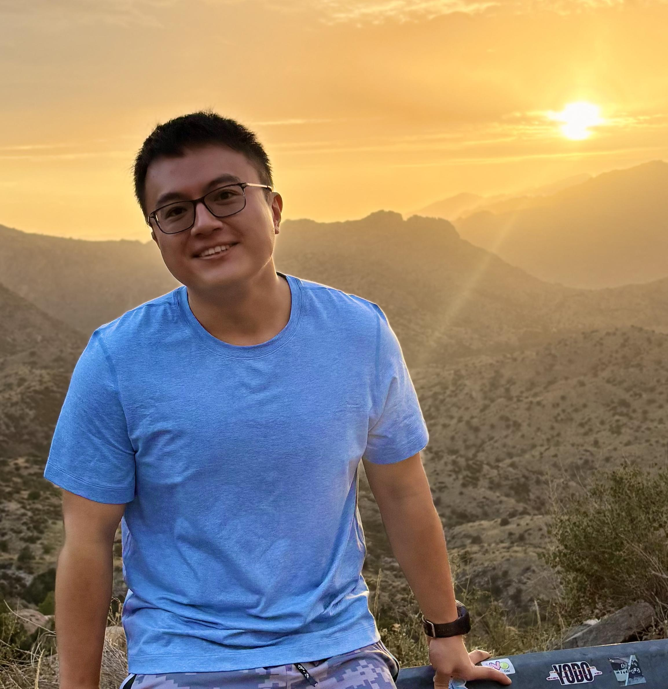

Chenyi Wang (王晨懿)
PhD Candidate · University of Arizona
PhD candidate at the WiSeR Lab, advised by Dr. Ming Li, FIEEE, researching security and performance of cooperative vehicular perception. My work spans AI/ML security, computer vision, and cyber-physical systems.
Education
MA · Statistics
Columbia University · GPA: 4.0
BS · Statistics & BA · Mathematics
U of Minnesota · GPA: 3.93
Minor in CS · High Distinction · Phi Beta Kappa

Publications
IEEE S&P Magazine 2025
Spatiotemporal Consistency: A Universal Defense Against Attacks on Autonomous Systems
Honors & Awards
- ✈️ USENIX Security Travel Grant '25
- ✈️ GPSC Student Travel Grant '24
- 🏆 Herbold Fellowship, VehicleSec Travel Grant '23
- 📊 Columbia Stats Fellowship, ASA JSM Award '22
Beyond Research
14ers · Philosophy · ?
click me...
Beyond Research
I love deep dives into philosophy and am an avid outdoor enthusiast. I've summited several of Colorado's famed 14ers, including Mt. Harvard, Mt. Yale, and Mt. Holy Cross.
✕ closeAcademic Service
Program Committee
- USENIX Security 2026 Artifact Evaluation
- VehicleSec 2026 Poster/Demo
- NDSS 2026 Poster Session
- EAI SmartSP 2026
Reviewer
- USENIX Security '23, '24, '26
- ACM CCS '23, '24, '25
- VehicleSec '23, '25
- AAAI '26 · IEEE IoT '25
- IEEE TIFS '24 · TCPS '25
- IEEE ICC '25 · ICCCN '23
Teaching Assistant
- ECE 478/578 Computer Networks · UofA · Fall 2025
- ECE 471/571 Info & Network Security · UofA · Spring 2025
- STAT 1101W Intro to Statistics · Columbia · Fall 2022
- STAT GR5203 Probability · Columbia · Spring 2022